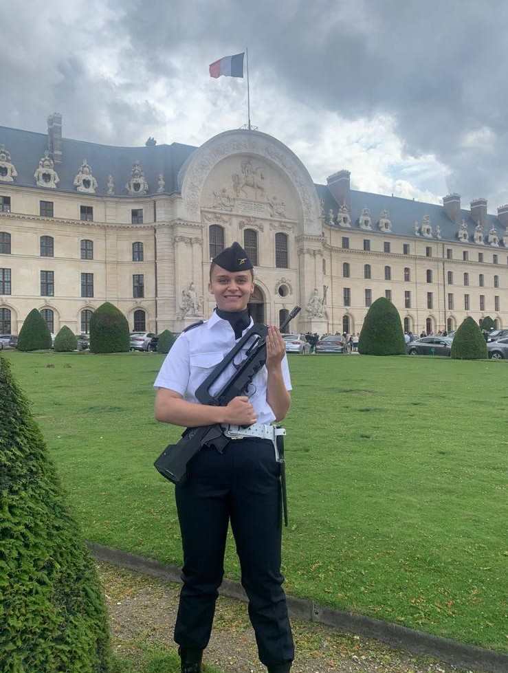

My journey was built step by step: explore each date to learn more.
2018 – High School
A first encounter with engineering“This visit didn’t just teach me what engineering was, it showed me that I could be part of it.”
During my final year of high school, I had the chance to visit the Paris Air Show at Le Bourget with the association Elles Bougent. I wasn’t expecting much from a school trip… but it ended up changing far more than I imagined.
Throughout the day, I spoke with women engineers from a wide range of technical fields. Their stories, their passion, and the way they described their work opened a door I hadn’t really considered before. For the first time, I could genuinely picture myself in a technical career — one that blends rigor, creativity, and real-world impact.
That visit was a true turning point. I realized that engineering wasn’t just about technology or machines; it was a way to contribute meaningfully to society by designing, improving, and understanding complex systems. I left the salon with a clear sense that this world could become my own.

2021 – Choosing Science
“The scientific A-level was, for me, the first step toward engineering.”
Building on that first immersion into engineering, I decided to pursue a scientific track in high school. I selected Physics‑Chemistry, Mathematics, and Engineering Sciences as my main subjects, along with the Advanced Mathematics option, to strengthen the foundations I needed to continue in this direction.
from 2021 to 2025- Learning through service
“Serving in the reserve meant choosing to act rather than remain a spectator.”
In July 2021, alongside my academic studies, I joined the operational reserve of the French Air Force on the air base of Creil. I was driven by a strong desire to be useful, to serve, and to give concrete meaning to my commitment beyond the classroom.
During this three-year engagement, I held several roles combining operational, organizational and administrative responsibilities. I first contributed to the supervision of reservist training programs within CIRAAE and took part in military training courses focused on cohesion, discipline and operational readiness.
I also participated in Operation Sentinelle during the Olympic Games. Working in three-person teams, we were responsible for monitoring the aerial security of Paris. During the Games, no aircraft was allowed to fly over the city, as it was considered a protected airspace. Being part of this protection system placed me in a high-responsibility environment, requiring constant vigilance, coordination and strict adherence to security procedures.
I later transitioned to the Human Resources Office, specifically within the Chancellery Bureau. In this position, I managed administrative tasks requiring a high level of rigor and confidentiality. I was involved in the preparation of evaluation reports, the issuance of diplomas, and the management, classification and archiving of official documents.
On the air base, I contributed to the handling of more than 1000 military personnel files. This responsibility demanded strong organizational skills, precision and reliability, as well as the ability to work efficiently within structured and highly regulated systems.
This experience significantly strengthened my sense of responsibility, my attention to detail and my ability to operate in demanding environments. It also taught me how to evolve within large organizations, manage critical information and contribute effectively to missions with real operational impact.

2021–2023 – Exploring to understand better
“Trying, adjusting, refining my direction.”
Autun — MPSI Preparatory Class
I began my higher education in a MPSI preparatory class in Autun, attracted by scientific rigor and physical challenge.
Alongside academics, I took part in military-style training periods and served as female company representative, acting as an interface between students and the command structure.
This experience pushed me to my limits but also made me realize I needed more applied and industrial sciences.
Toulouse — L2 Mechanics (Université Paul Sabatier)
I then pursued a reinforced university program in mechanics, approaching engineering sciences from a more theoretical angle.
- Electromagnetism
- Optics
- Particle mechanics
- Solid mechanics
- Fluid mechanics
Amiens — L3 Energy & Materials (Université Piacrdie Jules Verne)
Then, I completed my third year in Energy and Materials in Amiens.
- Energy conversion
- Thermodynamics
- Electrical engineering
- Power electronics
- Fluid mechanics
- Materials science
- Materials characterization
This year confirmed my strong interest in materials, laboratory work and the link between energy and matter.
2023 – Choosing engineering
“Engineering as the natural next step.”
I chose to join IMT Atlantique, recognized for its expertise in energy systems.
The first year common core strengthened my interest in thermodynamics and fluid mechanics.
In my second year, I specialized in nuclear energy, studying nuclear physics, reactor operation, fuel cycles, waste management, nuclear propulsion, Monte Carlo modeling and human & organizational factors.
What resonated most was the link between nuclear energy, materials science and sustainability.
2025 – Serving closer to the population
“Same commitment, different uniform.”
After moving to Nantes, I joined the operational reserve of the National Gendarmerie.
After completing the required training, I now serve as a brigadier-chief, reinforcing local units on short-term missions.
I particularly appreciate night missions, which require adaptability and decision-making under pressure.

2024 – On-the-ground experience
“Learning by doing.”
During my internship, I worked as a mechanic in an automotive garage.
I carried out maintenance tasks, basic repairs, and participated in engine disassembly and reassembly.
This experience highlighted the environmental limits of industrial practices and reinforced my desire to improve them.

2025 – Sharing and leading
“Creating, transmitting and bringing people together.”
I give private tutoring from middle school to undergraduate level.
I also served as treasurer of the student federation, supervising 13 associations and managing large-scale budgets, while being involved in the Student Sports Office.
These commitments strengthened my leadership, organization and project management skills.
Looking ahead
“Designing sustainable energy systems.”
My ambition is to work at the intersection of energy, materials and environmental transition, particularly through life cycle assessment.